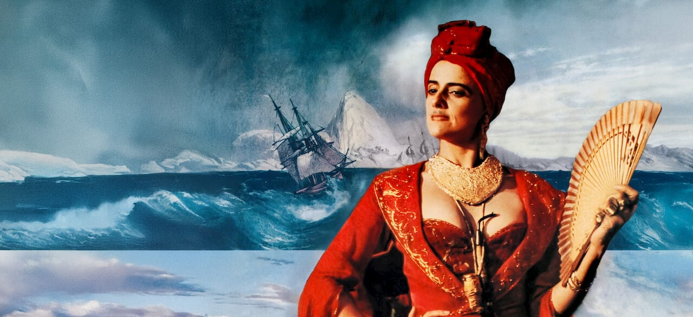

Carlota Joaquina: farsa, caricatura e a dívida com a História
Carlota Joaquina, Princesa do Brazil (1995), de Carla Camurati, ocupa um lugar singular no cinema nacional: marco inaugural da Retomada, o filme reconta a vinda da família real portuguesa ao Brasil não como reconstituição solene, mas como farsa declarada. O próprio dispositivo narrativo anuncia essa escolha — a história chega ao espectador pela voz de um escocês que a conta a uma menina, como quem transmite uma lenda. Antes de qualquer acusação de imprecisão, o filme já se apresentou como fábula.
E é como comédia que a obra acerta com mais precisão. O humor é certeiro, construído sobre um timing que raramente falha. O exemplo mais evidente é Dom João, interpretado por Marco Nanini, sempre comendo: um recurso básico, quase primário, mas de uma comicidade irresistível — sobretudo quando a gag reaparece em momentos inusitados, contaminando cenas que, em outro registro, pediriam gravidade. É o tipo de piada que só funciona porque o filme assume integralmente sua chave farsesca, sem hesitar entre tons.
Outro ponto alto está no tratamento das diferenças sociais entre as cortes espanhola e portuguesa. A oposição entre a rigidez castelhana e o desleixo lusitano opera, é verdade, por estereótipos históricos — mas a caricatura aqui não é preguiça, e sim método. Ao exagerar os traços de cada corte, o filme transforma diferença cultural em material cômico e, ao mesmo tempo, em comentário sobre as elites que desembarcaram no Brasil. O deboche é a própria leitura histórica que a obra propõe.
A fotografia, em conjunto com a mise-en-scène, sustenta esse projeto com um cuidado que surpreende para o contexto de produção do período. A época se garante diante da câmera: figurinos, cenários e composições constroem um mundo crível o suficiente para que a farsa tenha onde se apoiar. O riso precisa de um chão concreto, e a direção de arte oferece exatamente isso.
O que resta, então, é o debate que persegue o filme desde o lançamento: sua veracidade histórica. Carlota Joaquina é polêmico em suas escolhas, e historiadores apontaram, com razão documental, suas liberdades e distorções. Mas até que ponto o cinema deve ser tratado como aula de História? Na opinião deste humilde redator, pouco deve o cinema à historicidade — sua dívida maior é com a capacidade de trazer à tela uma realidade distinta de um povo, ainda que filtrada pelo exagero, pelo boato e pela anedota.
Há, é claro, um contraponto que merece ser encarado de frente: o Dom João glutão de Nanini moldou o imaginário de uma geração mais do que qualquer livro didático, e não falta quem veja nesse poder uma responsabilidade do próprio cinema. A conclusão correta, porém, é a inversa. Se uma farsa declarada conseguiu se instalar como verdade na memória popular, o problema não está na obra — está numa sociedade que ainda não aprendeu que cinema não é aula de História. É esse entendimento que precisa ser difundido, e o caso de Dom João é menos uma acusação contra o filme do que a prova de sua urgência: educar o olhar do espectador, não domesticar a liberdade do cineasta. Julgada na chave que ela própria anuncia, a obra escolhe a lenda contra o arquivo, o riso contra a reverência. Não uma aula, portanto — talvez até, de certa forma, um passatempo. Mas um passatempo que diz algo verdadeiro sobre como um povo prefere lembrar de sua própria origem: rindo dela.